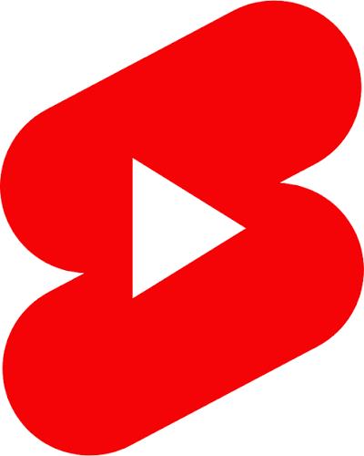

어떻게
사로잡을 지
먼저 생각하고
봉을 아십니까 (2024) 中
인터랙티브 단편영화 · 총감독 · 8인
이곳을 누르면 작품을 볼 수 있습니다
민트사탕 징크스 (2025) 中
단편영화 · 기획·제작 4인
기획/촬영/편집을 주도적으로 이끌며
플랫폼
스타일에 맞추고
INSTAGRAM REELS
장교숙소 5단지 공모전
촬영 숏폼 · 기획·제작 1인

YOUTUBE SHORTS
서울경제 쇼츠 공모전
촬영 숏폼 · 기획·제작 8인
그래픽 요소까지 한번에
중꺾마의 유래 中
인포그래픽 영상 · 기획·제작 1인

Seoul Metro Indicator (2025)
정보 디자인 · 기획·설계 1인
창의력을
발휘하고
사용자 경험을 개선하고
before
after
당근 나의 당근 · 서비스 진입 개선안
UI UX 서비스 개선 / 기획 디자인 1인
이제는 Ai로
미리캔버스 광고 대전 (2025)
광고 포스터 · 기획·제작 1인 · 최우수상
해봤기 때문에
시킬 줄도 압니다
AI로
빠르게 시안을 제작하고
The Scent of Page (2024)
브랜드 마케팅 시안 · 기획·제작 1인
Pureal 공모전 (2025)
AI 숏폼 · 기획·제작 1인
브랜드
쇼츠를 만듭니다
영상을 만들고
이미지를 만드는
지원자 이태현입니다
우유공장 이야기 (2024)
AI 단편 애니메이션 · 기획·제작 1인
{{ active.title }}
{{ active.note }}
{{ item.title }}
{{ item.genre }}
{{ item.role }}